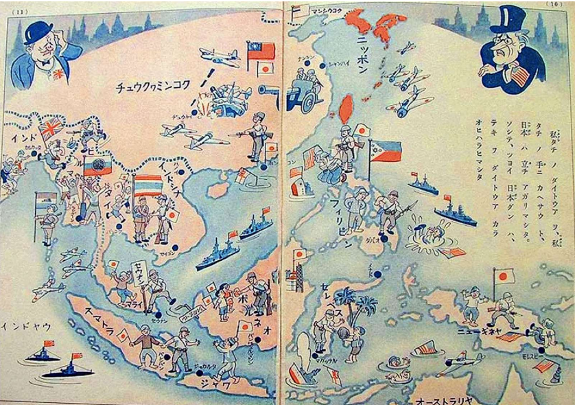
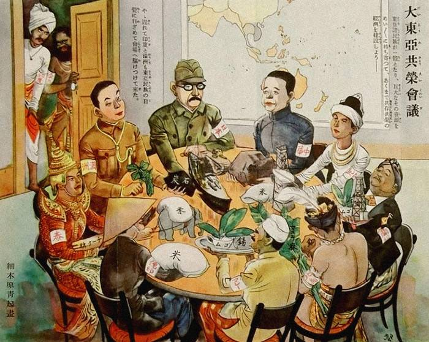
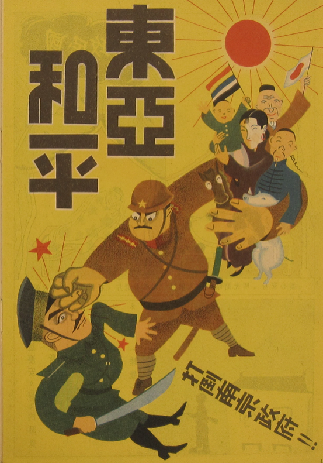
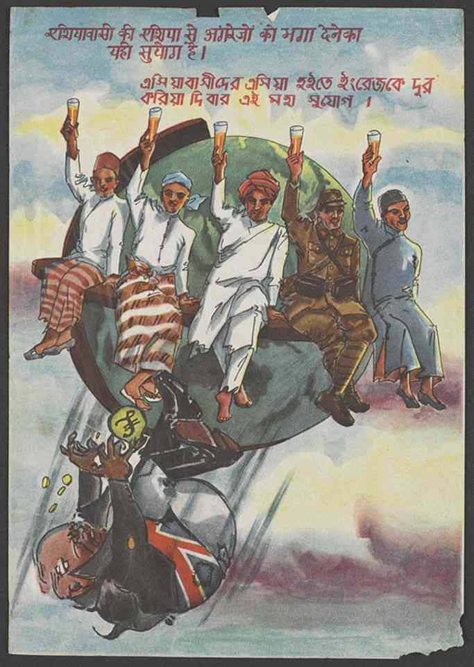

A critical visual analysis of Japanese wartime propaganda posters and the ideological contradictions encoded within them.
对日本战时宣传画及其内在意识形态矛盾的批判性视觉分析。
Between 1931 and 1945, the Japanese imperial state and its various puppet governments across East and Southeast Asia produced an extraordinary volume of visual propaganda. These images pursued a single, internally contradictory objective: to present Japanese military expansion as liberation — from Western colonialism, from racial hierarchy — while simultaneously encoding Japan's own racial supremacy and its right to lead, direct, and ultimately dominate the nations it claimed to be freeing.
1931年至1945年间，日本帝国及其在东亚、东南亚各地扶植的傀儡政权制造了大量视觉宣传材料。这些图像追求一个内在矛盾的单一目标：将日本的军事扩张呈现为解放——从西方殖民主义、从种族等级制度中解放——同时宣称日本自身的种族优越性及其领导并最终支配亚洲的正当性。
This archive assembles four propaganda posters from official and institutional collections. Each is read not merely as a historical document, but as a visual argument: a site where ideology and aesthetic form meet. The posters are analyzed for what they depict, what text they carry, who their audiences were, and what ideological work they perform. Broader thematic analysis follows the gallery.
本档案汇集四张来自官方及学术机构馆藏的宣传画。对图像的解读不仅停留其文献价值，更将其视作一种视觉论证：意识形态与美学形式相交汇之处。采用的分析聚焦于图像所描绘的内容、所携带的文字、所针对的受众以及所隐含的意识形态框架。更宏观的主题分析置于图册之后。

A pedagogical map teaching Japanese children and public in the occupied regions how to see empire. Across China and Southeast Asia, the flags of Western powers lie broken while local figures raise the rising sun in acclamation. Japanese soldiers fight the West with ruthless force and befriend Asian civilians with paternal tenderness—a structural division that recasts occupation as protection, hierarchy as family, and aggression as historical necessity.
以儿童与占领区大众为对象的帝国宣传画报，将亚太地区呈现为一幕旗帜更替的仪式性图景。破碎的西方列强国旗被扫除殆尽，亚洲本地民众手举日本太阳旗。日本军队以双重面目出现——对西方敌人冷酷无情，对亚洲平民亲如兄长——而罗斯福与丘吉尔被挤压于画面边缘，沦为历史的旁观者。一幅面向大众的帝国道德启蒙视觉教材。

A wartime cartoon depicts the Greater East Asia Co-Prosperity Sphere as a round-table of economic roles. Delegates wearing armbands represent different regions and present their assigned contributions. Japan alone provides battleships and steel, while others supply raw materials.A wall map behind them frames the Sphere as a closed system sealed off from Anglo-American influence. Through a half-open door, an Indian and an Aboriginal Australian enter, shown as “awakening” to an East Asian identity. Although the round table suggests equality, the distribution of resources reveals hierarchy: extraction is reframed as contribution, and asymmetry is aestheticized as cooperation, naturalizing Japanese leadership as development.
该战时漫画将“大东亚共荣圈”呈现为一个圆桌式经济分工体系。各参与者佩戴臂章，代表不同地区并展示各自“贡献”，其中日本提供战舰与钢铁，其他地区主要提供原材料。背景墙上的地图将共荣圈描绘为一个封闭体系，并与英美势力隔绝。画面右侧一扇半开的门中，一位印度人和一位澳大利亚原住民被表现为“觉醒”并进入东亚认同的过程。圆桌表面象征平等，但资源分配结构揭示其等级本质：掠夺被表述为贡献，不平等被美学化为协作，从而将日本的主导地位自然化为发展秩序。

A children’s book cover poster structured along a diagonal ascent. At the base, Chiang Kai-shek lies crumpled. Dominating the center is a towering Japanese soldier: his right fist enacts destruction, while his left arm shields civilians ascending above him. These smaller figures appear cheerful, laughing as they wave Japanese and five-colored Chinese flags among livestock. At the apex, a radiant sun sanctifies the composition. The soldier’s dual gesture, one violent, one protective, frames a single ideological message: that Japanese destruction and Japanese protection are not opposites, but expressions of one righteous mission.
这是一张儿童读物封面海报，画面结构以一条对角线上升的构图展开。画面底部，蒋介石被击倒、蜷伏在地。画面中心，一名巨大的日本士兵占据主导位置：他的右拳象征破坏与打击，而左臂则保护着向上延伸的平民群体。这些较小的人物面带笑容，在牲畜之间挥舞日本国旗与五色中华旗，显得轻松而欢快。画面顶端，一轮光芒四射的太阳赋予整个构图以神圣性。士兵一手施暴、一手守护的姿态，被统一诠释为同一套意识形态叙事：所谓“破坏”与“保护”并非对立，而是同一种正当使命的两种体现。

A 1944 leaflet targeting British India, printed in South Asian scripts. Five Asian men, among them a Japanese soldier cast as a co-liberator, sit atop a globe, raising their glasses in celebration. Beneath them, a British figure collapses, his flag patched and coins spilling outward. The vertical composition itself advances the argument: Asia above, Britain below; unity above, disintegration below. Imperial markers are deliberately subdued, allowing Pan-Asianism to appear not as a Japanese-imposed ideology, but as an already realized Asian truth. The viewer is positioned not as a participant in an ongoing struggle, but as a witness to an accomplished victory.
这是一张1944年的传单，面向英属印度地区发行，使用南亚文字书写。画面中，五名亚洲男子坐在地球之上举杯庆祝，其中包括一名被塑造为“共同解放者”的日本士兵。画面下方，一名英国形象倒地崩溃，国旗斑驳，金币四散。整个画面的垂直构图本身即构成论证：上方是亚洲的团结与胜利，下方是英国的瓦解与失败。帝国符号被刻意弱化，使“泛亚主义”不再呈现为日本主导的意识形态，而被塑造成一种“早已实现的亚洲真理”。观者不再被邀请参与斗争，而是被置于一个既成胜利的见证者位置之中。
Contextual Supplement · Resistance & Culture
背景补充 · 抵抗与文化
Resistance to imperialism and oppression can be poetic. In the Japanese puppet state of Manchukuo, this was no mere metaphor but a reality. Manchuria is a region in Northeast China bordering the Korean peninsula. It was from the Korean peninsula that imperial Japanese forces invaded in 1931, establishing control over the region, installing a puppet emperor, and renaming the region to Manchukuo. As the renaming of the region suggests, the Japanese did not subjugate Manchuria only to engage only in extraction of natural resources but to create a new state that would become part of the East Asia Co-Prosperity Sphere. What the Japanese realized upon taking over Manchuria is that a new state requires a new culture. The Japanese initiative to create a new culture in Manchukuo served a dual purpose: to create unity between peoples while also entrenching a Japanese led hierarchy.
On the surface, Japanese efforts to cultivate a new, shared culture between Chinese and Japanese in Manchukuo appears benign, almost benevolent. At least as benign and benevolent as an imperial project can be. Cultural initiatives were not initially controlled by a centralized propaganda bureau and would not be until 1941. Individual state-sponsored entities created opportunities for all of the peoples living in Manchukuo whether they be one of the five peoples of China (Han, Manchu, Mongol, Tibetan, or Uyghur), Japanese, or Korean. The Concordia Association, led by Muto Tomio, is an example of one such organization. The Concordia Association hosted a variety of competitions where individuals could submit their art or literature to be judged and win prizes. The competitions helped foster the development of the new culture of Manchukuo by incentivising cultural contributions and rewarding those that fit Japanese designs. Until 1941, the Japanese Government allowed the culture to develop on its own, albeit with encouragement from organizations like the Concordia Association. The idea in the Japanese mind was to create a shared culture with Manchurian characteristics. A shared culture could then be used as a legitimate basis for the creation of a new, multi-ethnic state which could be incorporated into the East Asian Co-Prosperity Sphere.
Beneath the surface of the Japanese sponsored cultural initiatives hid a clear strategy for legitimising Japanese preeminence in Manchukuo. Although the Japanese Government did not control the development of culture in Manchukuo directly, Japanese officials encouraged a culture that took its cues from Japan. The art and literature of manchukuo may have Manchurian characteristics, but it followed Japanese forms. Japanese avant-garde forms of literature and art were particularly prevalent in Manchukuo prior to the consolidation of cultural propaganda in 1941. Japanese also dominated Manchukuo's cultural institutions with Chinese and Koreans being relegated to the lowest positions with limited ability for advancement. Collections of literature published in Manchukuo also contained a majority of Japanese writers' works with works from Korean writers often being entirely absent. After 1941, art and literature became heavily pro-Japanese regardless of form. Shared culture became not a method of unifying peoples but mobilizing for war once the Japanese government consolidated control over propaganda in Manchukuo. The image of cultural unity the Japanese attempted to create by fostering a new culture served merely as a veneer over a mechanism of imperial control. The Chinese were not blind to this reality and culture, literature in particular, became a key mode of resistance.
Resisting Manchukuo : Chinese Women Writers and the Japanese Occupation by Norman Smith recounts the efforts of seven female writers in Manchukuo who left legacies of resistance to Japanese imperialism. The seven women, Mei Niang, Dan Di, Lan Ling, Wu Ying, Yang Xu, Zhu Ti, and Zuo Di, all benefited from the Japanese desire to create a new culture. At the cultural institutions of Manchukuo, all seven were able to make careers out of writing. A feat made more impressive by the fact that they were women as cultural norms, similar to those in the West, confined women to the home. The ability to create a career did not however translate to complicity in imperialism. The seven women used their platforms to critique the propaganda of the new Manchukuo culture.
Official propaganda, whether it be a picture or piece of writing, depicts the incipient nation as a harmonious, bountiful, peaceful land. In short, a utopia. However, the writings of the seven women reveal that this utopia is nowhere. Where propaganda portrays Manchukuo as bright and calm, the women describe the environment of their stories as dark and chaotic. Where official propaganda depicts a land of harmony between people, the women write of a land rife with patriarchy and oppression. The seven women also combat the new culture of Manchukuo by relying on themes and styles from the May Fourth Movement, a purely Chinese cultural movement which emerged following World War I. The consolidation of propaganda in 1941 led to a crackdown against negative portrayals of Manchukuo. Rather than acquiesce to the demands of empire, the seven women sacrificed their careers. Unfortunately, their careers would not recover despite the withdrawal of Japanese forces, as civil war erupted following the end of World War II. Nonetheless, their work sheds light on the true nature of Japanese occupation and remains as a legacy of imperial resistance.
抵抗帝国主义与压迫可以是诗意的。在日本扶植的傀儡国家满洲国，这绝非单纯的隐喻，而是现实。满洲是中国东北与朝鲜半岛接壤的地区。日本帝国军队正是从朝鲜半岛于1931年入侵，建立对该地区的控制，扶植傀儡皇帝，并将该地区更名为满洲国。更名本身就表明，日本征服满洲不仅是为了掠夺自然资源，而是要建立一个将成为东亚共荣圈一部分的新国家。日本人在接管满洲后意识到，新国家需要新文化。日本在满洲国推行新文化的举措具有双重目的：在民众之间创造统一的同时，强化日本领导的等级结构。
表面上，日本在满洲国培育中日共同新文化的努力几乎显得无害。文化举措起初并不受中央宣传机构的直接控制——这种整合要到1941年才会出现。以武藤富男为首的协和会等国家资助组织举办各类竞赛，民众可以提交艺术或文学作品参评并赢取奖励，以此激励文化贡献，并奖励那些符合日本设计的作品。日本人的构想是创造一种具有满洲特色的共同文化——为建立一个可纳入共荣圈的新型多民族国家提供合法的文化基础。
然而在这一表面之下，隐藏着一套将日本优越地位合法化的清晰策略。满洲国的艺术与文学或许具有满洲特色，但遵循的是日本形式。1941年以前，日本先锋派形式尤为盛行。日本人还主导着满洲国的文化机构，中国人与朝鲜人被降至最低职位，晋升空间极为有限。1941年后，无论采用何种形式，艺术与文学都变得高度亲日。共同文化不再是统一民众的方式，而成为动员战争的工具。文化统一的形象不过是帝国控制机制上的一层薄薄的外衣。中国人对这一现实并非一无所知——文化，尤其是文学，成为了抵抗的关键方式。
诺曼·史密斯所著《抵抗满洲国：中国女性作家与日本占领》记述了七位女性作家——梅娘、淡滴、蓝苓、吴瑛、杨絮、朱滴、左蒂——留下抵抗日本帝国主义遗产的努力。七人均在满洲国的文化机构建立了自己的事业，考虑到当时的文化规范将女性局限于家庭，这一成就尤为难能可贵。然而，事业的建立并未转化为对帝国主义的顺从。七位女性利用自己的平台批判满洲国新文化的宣传。
官方宣传将这个新生国家描绘为和谐、富饶、和平的土地——简而言之，一个乌托邦。七位女性的作品揭示，这个乌托邦无处可寻。宣传将满洲国描绘得明亮而平静，女性们却将故事环境描述为黑暗而混乱。官方宣传描绘各民族之间的和谐共处，女性们却书写了一片充斥着父权与压迫的土地。她们还借助五四运动的主题与风格来抵抗满洲国新文化。1941年宣传整合后，对满洲国负面描写的打压随之而来。七位女性没有屈从于帝国的要求，而是牺牲了自己的事业。即便在日本撤军后，她们的事业也未能恢复，因为二战结束后内战随即爆发。尽管如此，她们的作品揭示了日本占领的真实本质，作为帝国抵抗的遗产留存至今。
Source: Smith, Norman. Resisting Manchukuo: Chinese Women Writers and the Japanese Occupation. University of British Columbia Press, 2007.
Glossary of Key Terms关键术语词汇表
Manchukuo满洲国
1932–19451932–1945
A state established in Northeast China in 1932 under Japanese control. Although Puyi, the last Qing emperor, was installed as nominal ruler under the title Kangde Emperor, real authority was exercised by the Japanese Kwantung Army and associated administrative structures. Manchukuo functioned as a key site for testing imperial governance under the ideological framework of the Greater East Asia Co-Prosperity Sphere. 1932年在中国东北建立、由日本控制的国家。末代清朝皇帝溥仪被立为名义统治者（康德皇帝），但实际权力由日本关东军及其行政体系掌握。满洲国成为在“大东亚共荣圈”意识形态框架下检验帝国治理能力的重要实验场。
The Concordia Association协和会
1932–19451932–1945
The principal state-sponsored mass organization in Manchukuo, led by figures such as Muto Tomio. It organized cultural, civic, and educational activities across ethnic lines while promoting an official ideology of harmony. In practice, it functioned as a mechanism for coordinating and steering cultural production toward Japanese political and aesthetic norms under imperial supervision. 满洲国主要的国家资助群众组织，由武藤富男等人领导。其跨族群组织文化、教育与公民活动，并宣扬官方“协和”理念。然而在实际运作中，它成为在帝国监督下引导文化生产向日本政治与美学规范靠拢的机制。
The Five Peoples of Manchukuo五族协和
official doctrine官方意识形态
The doctrine of ethnic harmony among Manchukuo’s five officially recognized groups: Japanese, Han Chinese, Manchu, Mongol, and Korean. It presented an image of voluntary multi-ethnic coexistence, while in practice Japanese authorities occupied dominant administrative and cultural positions, and other groups were integrated into a hierarchical imperial structure. 满洲国五个官方民族——日本人、汉族、满族、蒙古族与朝鲜族——之间民族和谐的意识形态。该理念呈现出自愿多民族共存的表象，但在实践中，日本当局占据主导行政与文化地位，其余群体被纳入等级化的帝国结构之中。
The May Fourth Movement五四运动
19191919年
A Chinese intellectual and cultural movement emerging from the May 4, 1919 student protests against the Treaty of Versailles settlement. It promoted vernacular literature, scientific rationalism, feminism, and critiques of Confucian hierarchy. In Manchukuo-era literary contexts, references to May Fourth often functioned as claims to an alternative Chinese cultural and literary authority. 一场源于1919年5月4日学生抗议《凡尔赛条约》的中国思想文化运动。其倡导白话文学、科学理性、女性主义以及对儒家等级制度的批判。在满洲国时期的文学语境中，五四常被作为确立另一种中国文化与文学权威的参照资源。
Japanese Avant-Garde in Manchukuo满洲国的日本先锋派
pre-1941 cultural field1941年前文化领域
Before the wartime consolidation of cultural policy in the early 1940s, modernist and avant-garde forms originating in Japan, including proletarian literature, surrealism, and experimental poetry, circulated widely in Manchukuo. These forms shaped the dominant aesthetic frameworks of cultural production, even as authors of different ethnic backgrounds participated in their adaptation within imperial constraints. 在1940年代初战时文化政策逐步整合之前，源自日本的现代主义与先锋派形式，包括无产阶级文学、超现实主义与实验诗歌，在满洲国广泛传播。这些形式塑造了文化生产的主导美学框架，同时不同族群的作者在帝国约束下对其进行改写与适应。
The phrase hakkō ichiu (八紘一宇)—literally “eight crown cords, one roof,” and officially translated as “universal brotherhood”—served as a key ideological cornerstone of Japanese imperial expansion. Drawn from a legendary proclamation attributed to Emperor Jimmu in the ancient chronicle Nihon Shoki, it was revived in the twentieth century by the nationalist thinker Tanaka Chigaku and later popularized by Prime Minister Konoe Fumimaro in a 1940 speech. The phrase enacted precisely the dual structure traced throughout this visual archive: it asserted the equal inclusion of all peoples beneath a shared moral “roof,” while simultaneously organizing that roof around a Japanese center. Its proponents made this explicit. As one formulation put it, the Japanese “are equal to the Caucasians, but toward the peoples of Asia, we act as their leader.”
The four posters analyzed here function as visual translations of this concept. Each renders in image form the same productive ambiguity embedded in hakkō ichiu: an outward language of liberation and inclusion layered over an internal hierarchy of control. What unifies these images is a shared compositional logic in which domination is rendered compatible with harmony through spatial organization. Across the set, political relations are recast as questions of position, elevation, and alignment rather than explicit authority. Vertical arrangement replaces command as the primary expression of hierarchy: higher placement signals legitimacy, while lower placement is redefined as functional incorporation within a coherent whole. At the same time, collective scenes blur the boundary between coercion and participation, as figures appear coordinated, celebratory, or aligned even in contexts shaped by violence or conquest. This integration neutralizes intervention, producing a visual field in which asymmetry no longer registers as conflict but as differentiation within unity.
Taken together, these strategies render imperial hierarchy self-evident rather than argued. The images do not justify domination; they reorganize perception so that domination appears as coherence. In this sense, they resolve the contradiction embedded in hakkō ichiu not by exposing it, but by converting it into spatial form. This is the same logic the phrase performs in language: its claim to universality depends on a concealed center, and its promise of inclusion is inseparable from directional authority. The posters therefore do not merely illustrate the ideology—they complete it, stabilizing its contradictions as visual order.
“八紘一宇”（hakkō ichiu）一语，字面意为“八方屋檐归于一宇”，官方常译为“世界一家”或“普世兄弟关系”，是日本帝国扩张意识形态的核心概念之一。该词源自古代史书《日本书纪》中据传由神武天皇提出的神话性宣言，20世纪初被民族主义思想家田中智学重新阐释，并在1940年近卫文麿的演讲中进一步政治化与大众化。该概念凝练出帝国意识形态中的双重逻辑：一方面宣称所有民族被纳入同一“屋檐”之下，实现普遍性的包容与平等；另一方面又在结构上将这一秩序的中心确立为日本自身。如当时的表述所言：“日本人与白种人是平等的，但对于亚洲诸民族而言，日本则充当其领导者。”
本文分析的四张宣传图像，正是这一概念的视觉转译。它们以图像形式再现了“八紘一宇”所内含的结构性张力：在表层语言中呈现解放与包容，在深层结构中嵌入等级与支配。四幅图像的共同特征并不在于具体意象的重复，而在于共享一种构图逻辑——通过空间组织将统治关系转化为秩序关系，使支配得以与“和谐”并存。在这一视觉体系中，政治关系被不断重构为位置、高度与排列方式的问题，而非直接的权力指令。垂直结构取代了显性命令，成为表达等级关系的主要方式：位置越高，越被赋予合法性；位置越低，则被重新定义为整体结构中的功能性组成部分。与此同时，集体场景通过协同行动、共享姿态或一致朝向，模糊了强制与参与之间的界限。即使在涉及暴力或征服的情境中，这种整合也消解了其冲突性，使不对称关系不再呈现为对抗，而被理解为统一体内部的分工与差异。
由此，这些视觉策略共同构成一种效果：帝国等级关系不再通过论证被说明，而是被直接呈现为“自明的秩序”。图像不试图说服观者接受统治的合理性，而是通过重组观看方式，使支配关系本身看起来即为结构合理性。在这一意义上，它们并非解释“八紘一宇”的矛盾，而是将其转化为空间形式，从而完成其视觉化。这正对应于该概念在语言层面的运作方式：其普遍性宣称始终依赖一个被遮蔽的中心，而其“包容”承诺本身也无法脱离方向性权力结构。由此，这些宣传图像并非仅仅对意识形态进行图解，而是在视觉层面完成其逻辑，将其内在张力稳定为一种可见的空间秩序。
The phrase that unified Japanese Pan-Asianist propaganda across audiences was deceptively simple: “Asia for Asiatics.” It invoked a language of racial and civilizational solidarity against Western colonialism that was genuinely resonant for populations subjected to British, Dutch, French, and American rule, often experienced as violent, extractive, and explicitly racialized. Yet the slogan depended on a constitutive silence: which Asiatics would define, lead, and ultimately benefit from the order it named.
Read as a corpus, the four posters in this archive construct an Asia that is plural in representation but singular in orientation: a constellation of liberated peoples who nonetheless move, as if by natural necessity, toward the sun of Japanese center. The ambiguity that structures each image—solidarity and hierarchy, liberation and domination, equality and paternalism—is not an inconsistency but the very mechanism of the ideology itself. The image can embed hierarchy through spatial arrangement while simultaneously asserting equality through shared gesture. Unlike language, which risks exposing contradiction when pressed, the visual field sustains it by distributing it across form.
In this sense, Germer’s analysis of Japanese wartime aesthetics, Aydin’s intellectual history of Pan-Asianism, and Duara’s concept of “new imperialism” converge on a shared insight: the visual culture of the Greater East Asia Co-Prosperity Sphere cannot be reduced either to cynical manipulation or to betrayed idealism. Rather, it constitutes a historically specific formation in which both logics coexist in productive tension. It exploits, without resolving, the unstable relationship between anti-colonial aspiration and imperial ambition that structured Japan’s position in the early twentieth-century world order. The posters do not resolve this contradiction. They render it inhabitable.
在日本泛亚主义宣传中反复出现并贯穿不同受众的核心口号，是看似简单却极具穿透力的一句话：“亚洲是亚洲人的亚洲”。这一表述借助反对西方殖民主义的语言，唤起了一种基于种族与文明共同体的团结想象，对于长期遭受英国、荷兰、法国及美国殖民统治的地区而言，这种统治往往伴随着暴力、剥削与明确的种族等级，因此这一话语确实具有现实共鸣。然而，这一口号的成立依赖于一个结构性的沉默：究竟由哪一类“亚洲人”来定义、领导并最终受益于这一被命名的秩序。
从整体图像语料来看，本档案中的四幅宣传画共同建构出一种“多元面貌、单一方向”的亚洲想象：表面上呈现为民族与文化的多样性集合，实质上却是一种朝向单一中心的运动结构。无数“被解放的人民”被呈现为自然地、必然地汇聚于日本这一视觉中心。贯穿每一幅图像的结构性张力——团结与等级、解放与支配、平等与家长主义——并非设计失误或叙事矛盾，而正是意识形态得以运作的核心机制。图像能够通过空间布局内嵌等级关系，同时又借由共享姿态或共同表征维持表面平等；而语言在持续推演这一矛盾时往往会暴露其内在断裂，相较之下，视觉体系则通过形式分布使矛盾得以共存而不被拆解。
因此，格尔默（Germer）关于日本战时美学的分析、艾登（Aydin）对泛亚主义思想史的研究，以及杜阿拉（Duara）提出的“新帝国主义”概念在此形成交汇：大东亚共荣圈的视觉宣传体系，既不能简单归结为覆盖真实团结的冷酷操控，也不能视为被帝国扭曲的理想主义残余，而是一种更为复杂的历史结构——二者在其中以持续张力并存。它并未消解二十世纪初国际秩序中反殖民愿望与帝国扩张冲动之间的矛盾，而是以视觉形式将其加以承载与稳定。这些图像并不解决这一矛盾，而是栖居其中。
Greater East Asia Co-Prosperity Sphere Map Poster. c. 1942. Cabinet Information Bureau, Imperial Japan. Encyclopædia Britannica Image Collection.
Co-Prosperity Sphere Propaganda Posters. c. 1942–44. Japanese Military Administration, Malaya. Peace Memorial Museum (和平纪念馆), Kuala Lumpur.
Anti-Chiang Kai-shek Propaganda Poster. c. 1938–42. DHI / AHRC Chiang Kai-shek Visual Archive, Artwork 10.
Japanese Propaganda Leaflet. 1944. Burma Theater. National Army Museum, London. Accession NAM. 2000-06-163-1.
Konoe Fumimaro, speech on the New Order in East Asia (1940).
Aydin, Cemil. The Politics of Anti-Westernism in Asia. Columbia University Press, 2007.
Duara, Prasenjit. "The New Imperialism and the Post-Colonial Developmental State." The Asia-Pacific Journal 2, no. 1 (2004).
Germer, Andrea. "Visual Propaganda in Wartime Japan." Japan Forum 25, no. 4 (2013): 475–509.
Culver, Annika A. Glorify the Empire: Japanese Avant-Garde Propaganda in Manchukuo. University of British Columbia Press, 2013.
Culver, Annika A. Glorify the Empire : Japanese Avant-Garde Propaganda in Manchukuo. University of British Columbia Press, 2013.
Smith, Norman. Resisting Manchukuo : Chinese Women Writers and the Japanese Occupation. University of British Columbia Press, 2007.